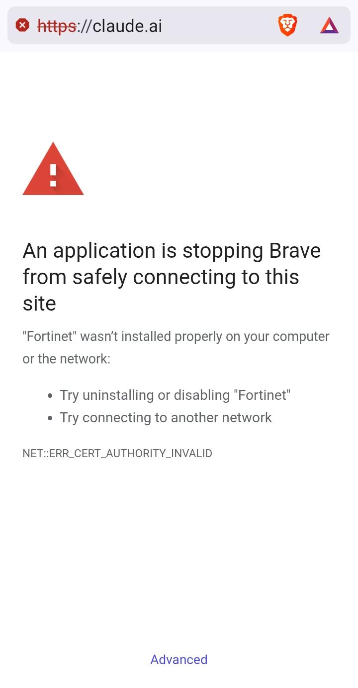
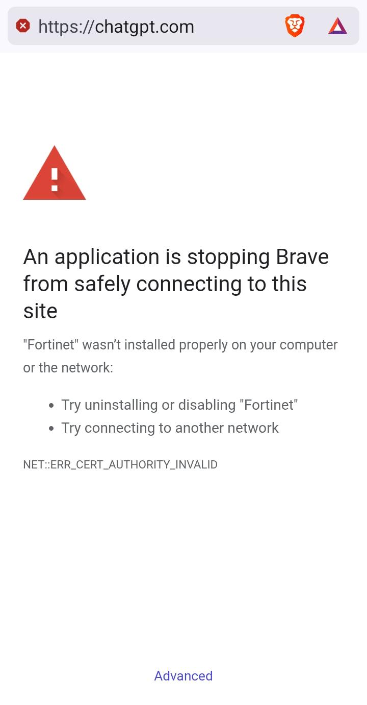
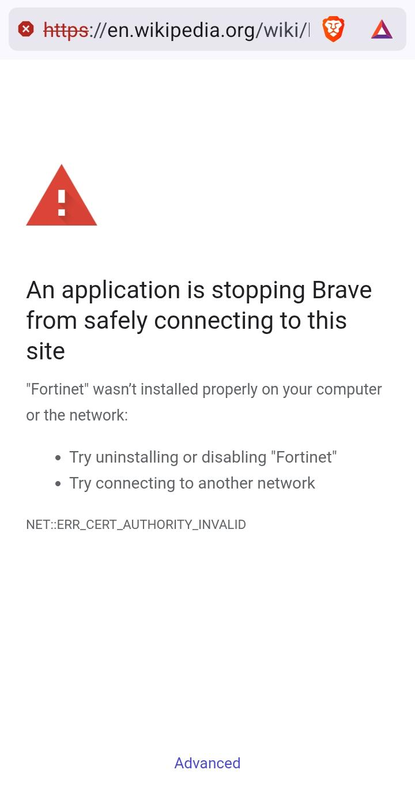

Why sshuttle2 exists
The hospital Wi-Fi blocked everything except SSH. So before I could do my work, I had to fix my internet. This is why I wrote sshuttle2, a full Rust implementation inspired by sshuttle.
Allwin, October 2026
Source code: github.com/allwinpower/sshuttle2
+--------------------------------------+ | PATIENT my internet | | WARD patient Wi-Fi | | DEVICES a Mac and a phone | | ALLERGIES AI, VPNs, Wikipedia | | TOLERATES SSH, port 22 | +--------------------------------------+
Table of Contents
- Admitted
- Symptoms
- Examination
- First treatment: sshuttle
- Surgery
- Vitals after surgery
- Discharge notes
1. Admitted
I ended up in a hospital. The staff were kind, the bed was fine, and I still had work to do. I had my Mac and my phone with me, and the hospital has patient Wi-Fi. Great, I thought, and opened the laptop.
2. Symptoms
The patient Wi-Fi sits behind a Fortinet firewall, and that firewall has opinions. The Mac and the phone got the same treatment. The screenshots are from the phone (Brave on Android).



Three sites, three identical refusals.
What the firewall blocked, on both devices:
- Claude, ChatGPT and every other AI tool I tried.
- Every VPN: WireGuard, Shadowsocks, Mullvad, and the rest.
- Wikipedia. The free encyclopedia. In a building full of people who want to look up their own diagnosis.
The error is NET::ERR_CERT_AUTHORITY_INVALID. The firewall opens every HTTPS connection to look inside and signs the result with its own certificate. My devices have never met that certificate, so they refuse the page.
Brave offers two fixes:
> Try uninstalling or disabling "Fortinet"
Sure. I'll walk to the hospital's server room in my patient gown and ask nicely.
> Try connecting to another network
Patients don't get to pick the network.
3. Examination
I tried everything. One thing got through: SSH. Maybe the IT team needs it, maybe nobody thought about it. Either way, I could log in to my own server from the Mac.
Fortinet
|
[Mac] ----X---> claude.ai, chatgpt.com
[phone] ----X---> wikipedia.org
----X---> WireGuard, Shadowsocks,
Mullvad, ...
[Mac] == ssh :22 ==> [my server] --> internet
If you can SSH, you can tunnel. That is the idea behind sshuttle: a VPN over a plain SSH login, with nothing to install on the server.
4. First treatment: sshuttle
sshuttle worked on the Mac. Everything got through. Slowly.
- Downloads ran at 12.8 Mbit/s. The same Wi-Fi does 91.9 Mbit/s to sites it doesn't block.
- A tiny page request waited 1.8 seconds. With a download running next to it: 2.3 seconds.
Every click felt like waiting for the doctor's round.
The cause is not a bug. sshuttle sends every byte through one single-threaded Python process on the server. On small cloud servers that caps it at about 30-45 Mbit/s, and every packet waits its turn in the same queue. sshuttle is a great idea and has helped people for years. It just could not carry my workday.
5. Surgery
So before I could do my actual work, I had to fix my internet.
I wrote sshuttle2, a full Rust implementation inspired by sshuttle. Both ends are new code, and it keeps the good idea: you need nothing on the server except an SSH login. It runs on the Mac (and on Linux). On first run the client uploads a small server program (about 1.3 MB) through SSH and reuses it after that.
What changed:
- No Python in the data path.
- Both ends are compiled Rust.
- Many connections, one SSH session, separate lanes.
- Each connection has its own flow control, so one big download doesn't block everything else.
- Windows that size themselves.
- Each lane grows while it limits the speed and shrinks when it only builds a queue. One download can use the link, and a page doesn't wait behind it.
- TCP, DNS, and all UDP.
- In tun mode video calls, QUIC and games go through the tunnel too.
- Clean exit.
- Firewall rules and routes are removed when it stops, even after a crash.
6. Vitals after surgery
Measured on the Mac. Same Wi-Fi, same server (2 vCPU, 4 GB), same day (23 October 2026). Single samples; a repeat with medians is on the TODO list.
Page wait, idle. Shorter is better. (one # = 80 ms) no tunnel* ## 128 ms sshuttle ####################### 1817 ms sshuttle2 pf ## 131 ms sshuttle2 tun ### 211 ms
Download. Longer is better. (one # = 4 Mbit/s) no tunnel* ####################### 91.9 sshuttle ### 12.8 sshuttle2 pf ##### 19.1 sshuttle2 tun #### 17.4
+---------------+----------+-----------+------------+ | | download | page wait | page wait | | | Mbit/s | idle, ms | busy, ms | +---------------+----------+-----------+------------+ | no tunnel* | 91.9 | 128 | 65 | | sshuttle | 12.8 | 1817 | 2281 | | sshuttle2 pf | 19.1 | 131 | 338 | | sshuttle2 tun | 17.4 | 211 | 223 | +---------------+----------+-----------+------------+
* No tunnel: blocked sites stay blocked. pf mode: TCP and DNS. tun mode: TCP, UDP and DNS. Download: one 100 MB file. Page wait: time until google.com/generate_204 sends its first byte. Busy: while that download runs.
- Pages answer about 14 times faster than with sshuttle (1817 ms -> 131 ms), and about 10 times faster while a download runs (2281 ms -> 223 ms).
- Downloads are about 1.5 times faster (12.8 -> 19.1 Mbit/s).
- There is still a gap: the bare Wi-Fi does 91.9 Mbit/s. The patient is stable, not cured.
7. Discharge notes
I wrote this for myself, to get back to work. If it helps one more person stuck behind a firewall that blocks Wikipedia, it was worth it.
Take it. Fork it. Bomb it with pull requests.
+------------------------------------------+ | Vibe-code it until the doctor comes. | +------------------------------------------+
In a hospital, that happens every morning at rounds.
TODO: get from 19 Mbit/s to 92.
- Source code: github.com/allwinpower/sshuttle2
- Pull requests: github.com/allwinpower/sshuttle2/pulls
- Bugs and ideas: github.com/allwinpower/sshuttle2/issues
- Where the idea comes from: github.com/sshuttle/sshuttle